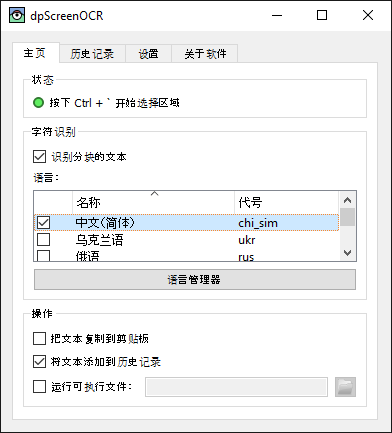

dpScreenOCR
dpScreenOCR是一个可以从屏幕任意部分提取文本的程序。它避免了在处理扫描文档、截图、视频、用户界面元素及其他无法以常规方式复制文本的情况下手动重打的必要。

特色：
-
支持100+种语言。 英语默认包括；其他语言可通过内置管理器安装。
-
易于上手。 按下全局快捷键，选择屏幕上的某个区域，并将识别的文本发到剪贴板。
-
离线运行。 识别文本是在你的设备上完成的。仅下载额外语言时需联网。
-
自由且开源的软件。由Tesseract驱动。
安装、配置、使用本程序的说明，见使用手册。
下载版本1.5.1（历次更新的内容；许可证）：
帮忙翻译；帮忙开发。